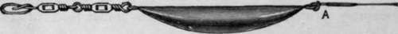
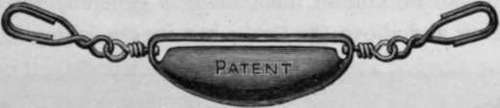
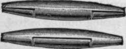
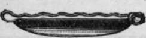
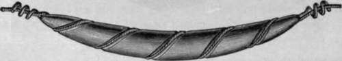
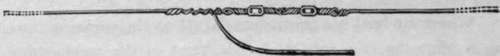

Sea Fishing From Small Boats. Part 10
Description
This section is from the book "Sea Fishing", by John Bickerdyke. Also available from Amazon: Sea Fishing.
Sea Fishing From Small Boats. Part 10
Of leads there are many patterns, but the best of them are those the centre of gravity of which is below the level of the line. The old system was to have the trace running through the centre of the lead. Swivels notwithstanding, twisting and kinking of the line above the lead frequently took place. Now that the lead nearly always hangs below the level of the line, the lead does not turn over, and kinking above it is impossible, unless a very powerful spinning bait is being used and the swivels are not in working order. In the event of none of the specially designed leads being available, the ordinary pipe lead can be adapted by placing a short piece of gut, gimp, or line through it and lashing the two ends on to the trace. It will then be below the level of the line and effectually stop kinking, assuming that there are any swivels beyond the lead. Sea fishermen have been aware of the advantage of this arrangement for generations. The late Mr. Francis Francis introduced a lead of the kind into freshwater fishing, and his ideas were still further perfected by Mr. Cholmondeley Pennell, whose excellent leads for pike fishing are well known. The above illustration shows a first-rate lead for spinning traces, greatly favoured by freshwater anglers ; but what is perhaps a still greater improvement has been introduced by Mr. Geen, in whose invention, as will be seen from the illustration opposite, the swivels and leads are one.
When fishing for pollack it is very often desirable to vary the depths of the bait according to the time of day and the depth of the water ; for while in the evening these fish may be hooked close to the surface, in the daytime they cannot be caught at all unless the bait is dragged close to the rocks and weeds just in front of their eyes. Many a professional fisherman will say that railing for pollack in the daytime is time wasted ; but those who have learned the secret often capture very nearly as many fish before sunset as afterwards. If I am failing to secure pollack in the daytime, I keep on increasing the weight of lead until I find my hooks catching in the seaweed. Then I reduce the length of the line by a few yards by simply reeling it up, which will cause the bait to swim a foot or two higher, and I feel satisfied that the bait is just clearing the weeds.
A Modern Trace Lead.
Geen's Lead.
Norfolk Lead 'Fishing Gazette' Lead.
Where the lead is a permanent fixture on the spinning trace, as is often the case with the productions of the tackle shops, this lead-changing is a great nuisance. One way of dealing with the difficulty is to have leads of various weights fitted at each end with strong hooks, such as those shown attached to the Geen lead. Another method is to use either a ' Fishing Gazette' lead, which, it will be noted, is mounted on a sort of safety pin, a Norfolk or a curved ' Jardine ' lead. The way they are applied to the line can be easily gathered from the illustration. Failing these, ordinary pipe leads can be curved (a piece of wire through them the while to keep the hole open), and mounted with long loops of gimp at each end. These are easily strung together, or hook swivels can be substituted for the loops.
 .
Fishing Gazette Lead.
In a pike or salmon trace there is generally gut or gimp both below and above the lead ; but in sea fishing it is more convenient to have nothing above the lead except the running line, on which it is easy to fix one or more adjustable leads as may be required. Immediately below the lead should be fixed a strong double swivel.
Archer-Jardine Lead Curved.
Sometimes, and particularly when using a metal bait, no lead is required on a trace. In that case it is a capital plan to fix a piece of lead or copper wire above the double swivel, in the manner shown in the above illustration. It compels the swivels to work and prevents kinking of the line.
Swivel Compeller.
When mackerel are near the surface, an ounce lead may be found sufficient, and the weight can be increased up to three or even four ounces if the fish do not come to the hook.
Mackerel tackle, for use from small boats, is very simple : to the end of your running line attach your Geen or similar lead, then three or perhaps four yards of lake-trout gut, and at the end a hook of a size between those shown in the illustration. The best bait for mackerel is illustrated on p. 107.
If the fish are large, plentiful, and biting freely, a large hook is best, as it is speediest removed from the mouth of the fish. But when the mackerel are shy a small hook is great medicine, as I have proved times and oft.
I have seen salmon gut and even twisted gut used for a mackerel snood. This is absurd when fishing with a rod from a rowing boat, for the fish only run from a half to two pounds as a rule, and may be caught with very light tackle. In fine, calm weather fairly fine tackle is a decided advantage, and the value of silkworm gut in this connection has been recognised by hosts of professional fishermen, many of whom never think of mackerel fishing without a yard or two of gut at the end of their snooding.
For bass railing, either first-rate salmon gut should be used below the lead—and three yards 1 of it will not be too much— or else slightly lighter gut, double or treble. But these fish are shy, and in bright, calm weather the angler will be well advised to fish as fine as he dare. If he is an expert trout fisherman, used to catching fish of three or four pounds on fine-drawn gut, he will hardly need stout salmon gut to bring to boat a bass of five or six pounds ; but, of course, if he is not accustomed to use fine tackle, he will be well advised to begin by using something very strong and trustworthy.
Continue to:
- prev: Sea Fishing From Small Boats. Part 9
- Table of Contents
- next: Sea Fishing From Small Boats. Part 11
Tags
fishing, hooks, bait, fishermen, spanish mackerel, mackerel fishing